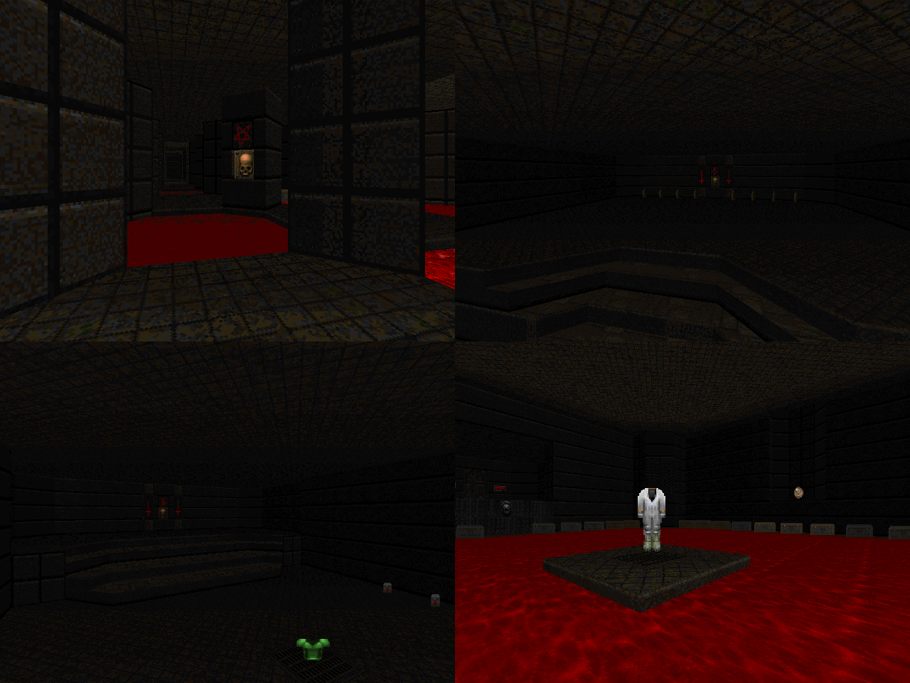

DOWNLOAD LINKS


| Year | 2022 |
| IWAD | Doom II |
| Source port | Boom-compatible |
| Game mode(s) | Single-player |
| Map(s) contributed | MAP22 of ASS69-2.wad |
Arguably one of the longest-running and most iconic speedmapping series in the history of Doom, the Abyssal Speedmapping Sessions (or ASS for short)
had its final session held in September of 2022. The series sure went out with a bang, with four rounds held and three megawads' worth of map submissions.
And Yours Truly had the pleasure of partaking in the madness and having a map in one of the compilations.
MAP22 of the second compilation, "In Memory of the ASS Featuring Ron Jeremy", is perhaps one of the most experimental maps I've ever made. It starts out
in a quasi-mazelike room made out of octagons with rooms branching off of it and switches that open each one. The gameplay revolves around skirting around
the enemies that wander the metallic hallways and shooting rockets into their faces, and the final area houses possibly one of the trickiest combat scenarios
I've ever implemented. It's so tricky, in fact, that I couldn't beat it myself in testing (and still can't)!